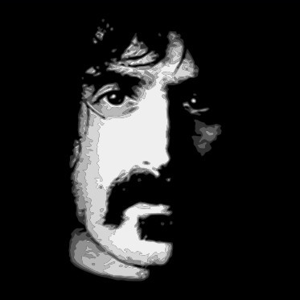
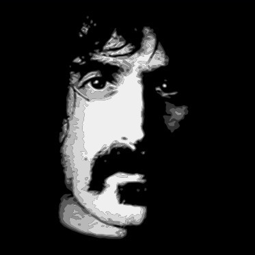

Vertigo is a tool that transforms raster images into vectors using two distinct shaders - circular dot grid and variable-width spiral.
It is open-source, and you can access the code on GitHub. If you find it useful, I also write about similar topics on my blog.
Feel free to use any images produced by Vertigo as you please, but it would be greatly appreciated if you could include a link back to the website.
 
